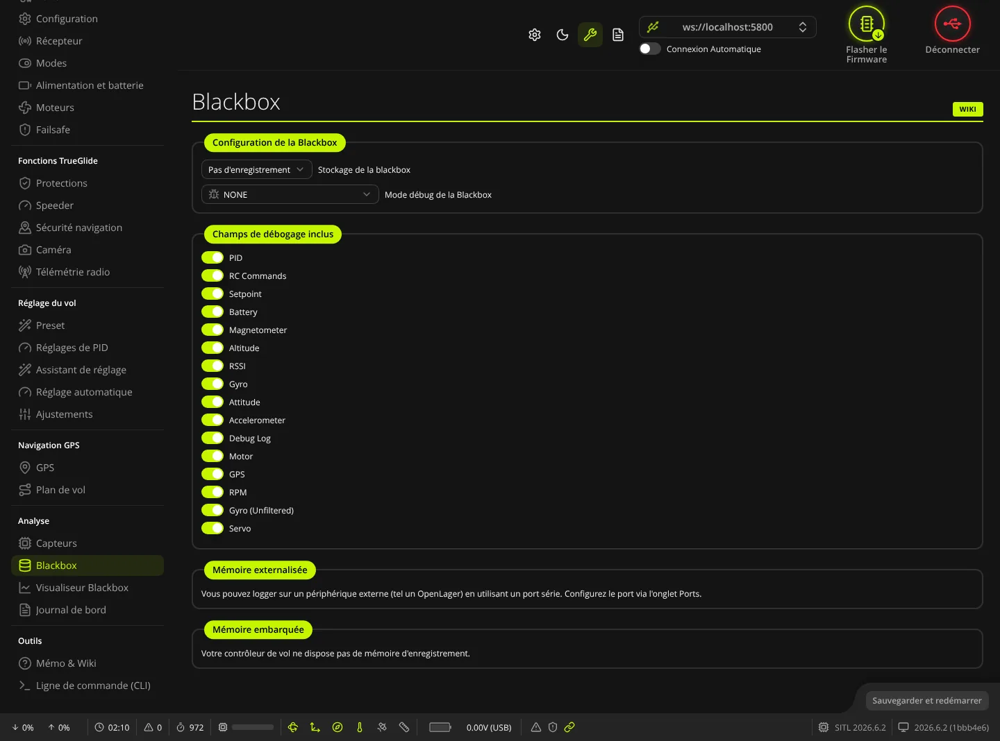
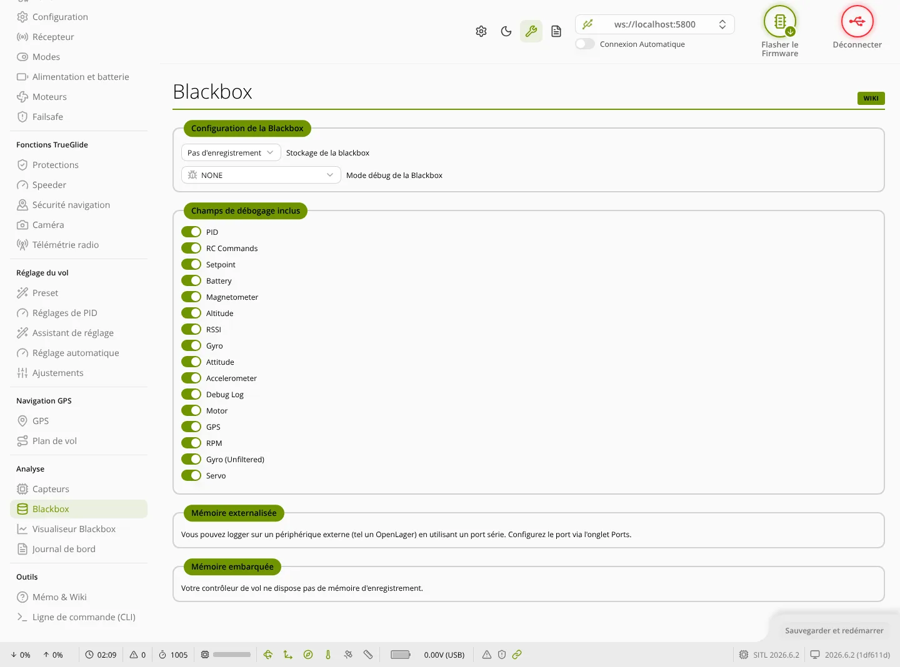

TRUE
TRUEBlackbox
L'onglet Blackbox (groupe « Analyse ») sert à régler l'enregistrement des journaux de vol (où, à quelle cadence, quel mode debug) et à récupérer ou effacer les journaux gardés dans la carte.


Configuration de la Blackbox
- Stockage de la blackbox : où le journal est écrit.
- Pas d'enregistrement : blackbox coupée ;
- Mémoire sur la carte : puce mémoire soudée sur la carte (proposé seulement si la carte en a une) ;
- Carte SD : lecteur de carte SD de la carte (seulement si elle en a un) ;
- Port série : enregistreur externe branché sur un port série (voir plus bas) ;
- Vers un fichier : seulement avec le gyro virtuel du simulateur.
- Fréquence d'enregistrement de la Blackbox (caché sur « Pas d'enregistrement ») : part de la fréquence de la boucle PID. Les choix vont de 1/1 (chaque cycle) à 1/16 ; la fréquence obtenue est affichée entre parenthèses, calculée d'après la fréquence du gyro et le diviseur PID de la carte. Plus la fréquence est haute, plus le journal est précis et plus il remplit vite la mémoire.
- Mode débug de la Blackbox : choisit les valeurs écrites dans les 8 champs « debug » du journal. Liste triée par ordre alphabétique, avec un champ Recherche. NONE = pas de debug.
Modes debug propres à TRUEGLIDE
Le firmware ajoute deux modes à ceux de Betaflight. Le logiciel les affiche par leur nom dans la liste du Mode débug de la Blackbox :
| Mode | Champs debug |
|---|---|
POWER_GUARD | [0] limite des gaz (‰) ; [1] limite due à la température (‰) ; [2] limite due au courant (‰) ; [3] température de l'ESC le plus chaud (°C) ; [4] courant batterie (A × 10) |
MOTOR_HEALTH | [0] à [7] : nombre de relances des moteurs 1 à 8 depuis la mise sous tension |
Ces modes servent à vérifier les fonctions de l'onglet Protections (limitation des gaz, relance des moteurs). Le mode debug choisi ici sert aussi au graphique « Debug » de l'onglet Capteurs et à la propriété MSP_DEBUG du Journal de bord.
Champs de débogage inclus
Chaque interrupteur ajoute ou retire un groupe de données du journal : PID, RC Commands, Setpoint, Battery, Magnetometer, Altitude, RSSI, Gyro, Attitude, Accelerometer, Debug Log, Motor, GPS, RPM, Gyro (Unfiltered), Servo. Couper ce qui ne sert pas allonge la durée d'enregistrement. Pour un réglage de filtres, gardez Gyro, Gyro (Unfiltered) et Motor ; pour les modes debug, gardez Debug Log.
Mémoire externalisée
Pour écrire le journal sur un enregistreur externe (par exemple un OpenLager) : choisissez Port série ci-dessus, puis attribuez la fonction blackbox à un port dans l'onglet Ports.
Mémoire embarquée
Ce cadre n'apparaît en détail que si la carte a une puce mémoire. Une barre montre l'Espace utilisé et l'Espace libre. Les boutons sont grisés tant que la mémoire est vide.
- Effacer la mémoire interne : efface tous les journaux après confirmation (Oui, effacer la mémoire interne). Une fenêtre « Effacement en cours » reste ouverte jusqu'à la fin.
- Enregistrer sous... : copie la mémoire dans un fichier
.BBLsur l'ordinateur (nom proposé :BLACKBOX_LOG, nom du drone, date et heure). Une barre de progression s'affiche ; Annuler arrête la copie. - Enregistrer & effacer : copie puis efface. L'effacement n'a lieu que si tout a été copié ; sinon la mémoire est gardée et un message le signale dans le journal du logiciel. Si la carte sait passer en mode stockage de masse, ce bouton n'est proposé qu'en mode Expert.
SD card Interne
Cadre visible seulement si la carte a un lecteur SD. Il donne l'état de la carte SD (Carte non insérée, Démarrage de la carte, Démarrage du système de fichier, Carte prête, ou Erreur fatale : redémarrer et réessayer), puis l'Espace indisponible et l'Espace libre pour les logs. L'état est relu toutes les 2 secondes.
Mode de stockage de masse
Visible quand le stockage choisi est la mémoire de la carte ou la carte SD, et que la carte gère ce mode.
- Cliquez sur Activer le Mode de périphérique de stockage de masse (grisé si la mémoire ou la carte SD n'est pas prête).
- La carte redémarre et l'ordinateur la voit comme une clé USB : copiez les fichiers de journaux.
- Éjectez le disque puis débranchez et rebranchez la carte pour revenir au mode normal.
Sauvegarder et redémarrer
Le bouton Sauvegarder et redémarrer devient actif dès qu'un réglage du haut ou un champ de débogage a changé. Il envoie la configuration à la carte, l'enregistre et la redémarre.
Voir aussi
- Visualiseur Blackbox : lire les journaux récupérés.
- Mémo & Wiki, page « Analyse des journaux ».